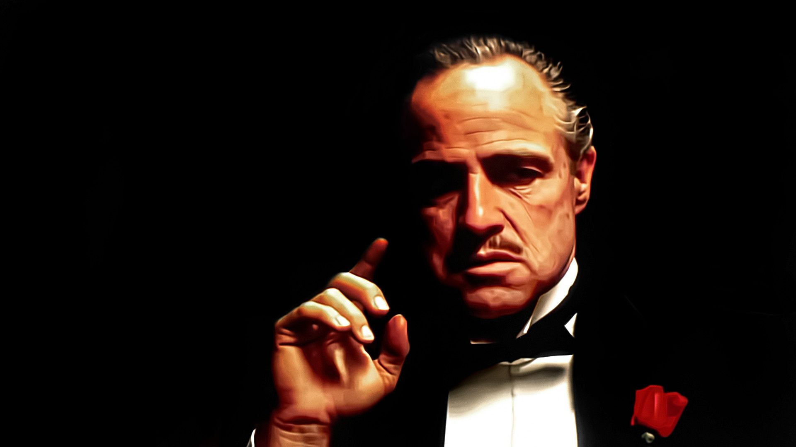
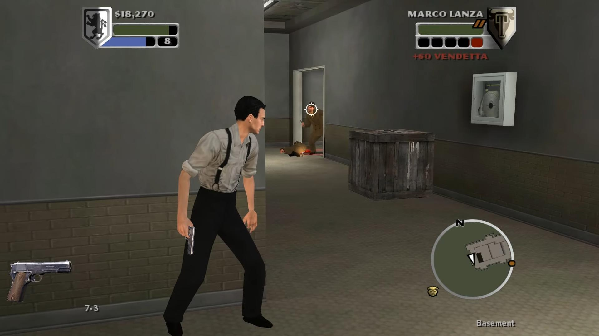
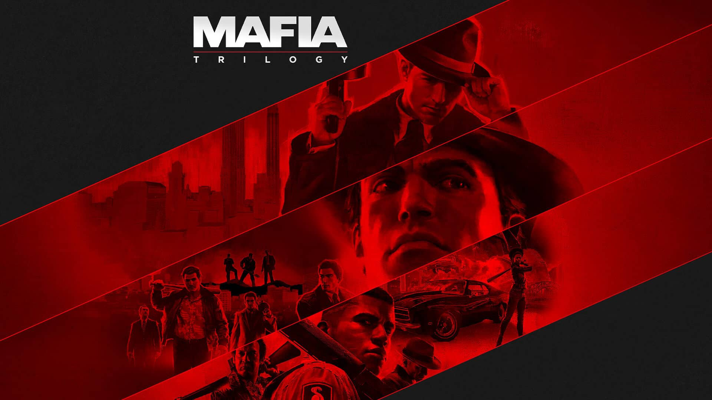
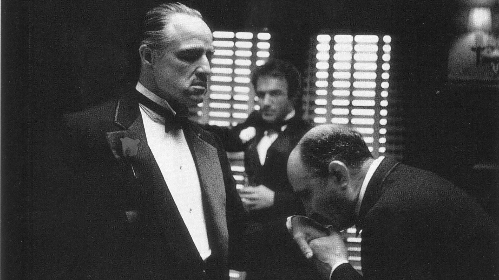
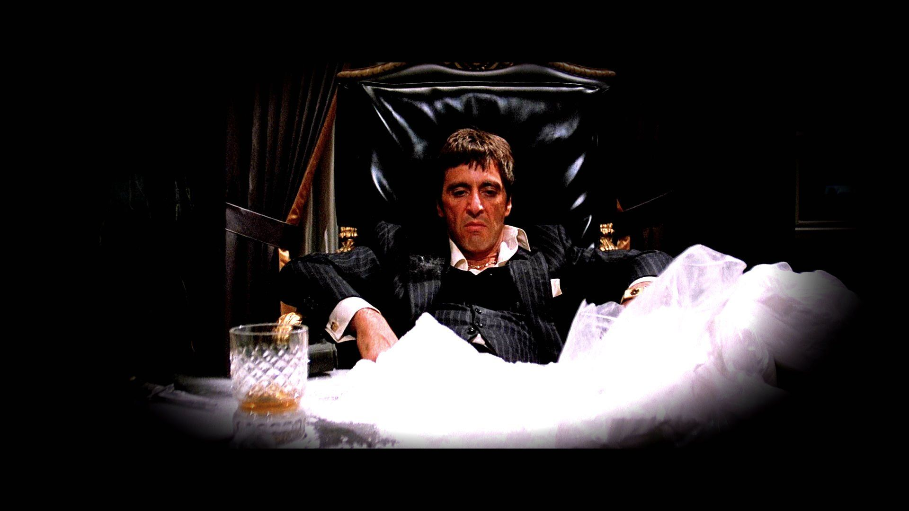
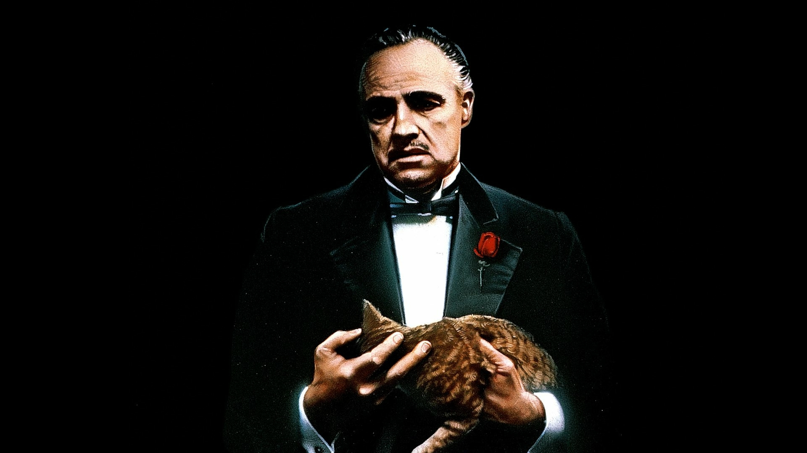

O Poderoso Chefão é um filme norte-americano de 1972 produzido pela Paramount Pictures, dirigido por Francis Ford Coppola e baseado no livro homônimo de Mario Puzo. O filme conta a história de Don Vito Corleone, um imigrante italiano que ascendeu no crime, e sua família, que usam de violência para coagir pessoas, além de contarem com uma rede de criminosos e agentes públicos corruptos para proteger seus negócios. Considerado um dos melhores filmes já feitos, a obra inspira até hoje outras criações sobre a temática mafia italiana, podendo ser elas, filmes, séries, jogos etc.